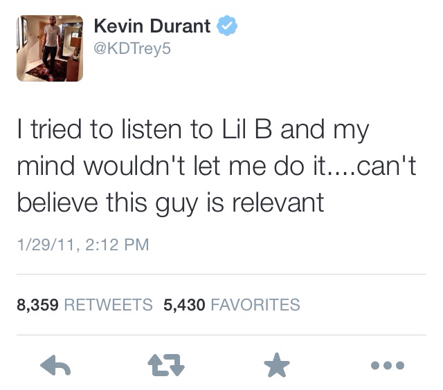
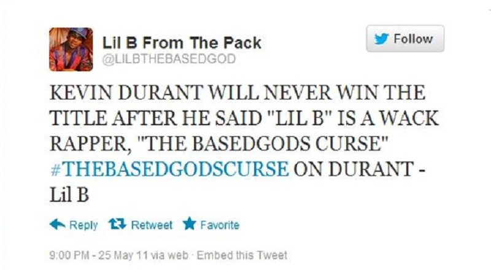
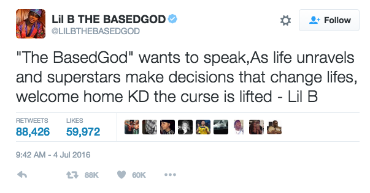
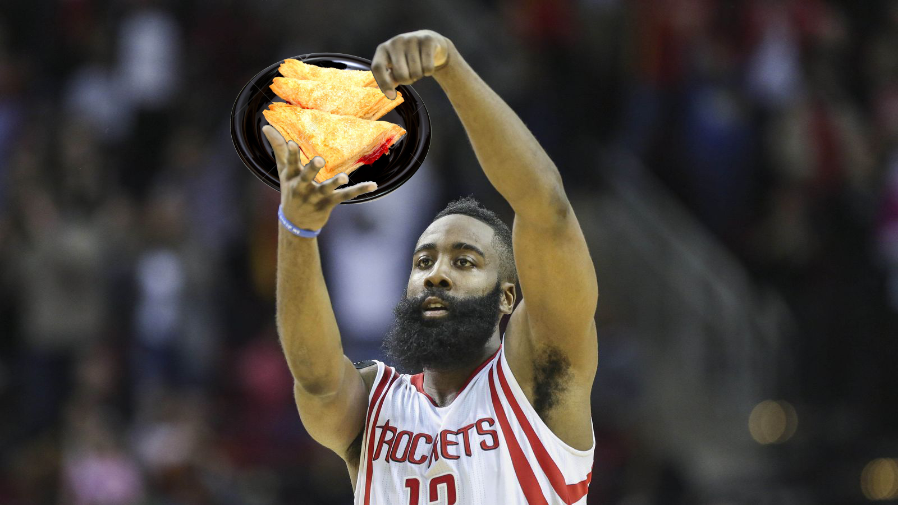

Lil B contains an outrageous amount of power in the NBA through his ability to communicate with the Based God. On
January 29th 2011 at 2:12 PM Kevin Durant made the worst mistake of his career. Kevin Durant angered the Based God.


After Lil B posted the tweet prophesying against Kevin Durant, five years passed with Kevin Durant consistently
playing near the top of his league without a title. The Based God is a merciful god and when Kevin came upon injuries
Lil B tweeted that he would lift the curse if he could play a game of 21 with Kevin Durant. He declined the offer.
Yet another year of defeat waked in the eyes of Kevin Durant.

On July 4th 2016 Kevin Durant realized he could no longer fight the Based God's curse. Kevin turned to the Oakland
Warriors to seek refuge from Lil B by joining his own home towns team. Since Lil B could not curse his own team he
decided it was time to lift the curse and forgive Kevin Durant. In 2017 after one year free from the Based God's
Curse Kevin Durant won his first NBA title.
Pictured Above: Lil B with Kevin Durant's mother.
James Harden
James Harden is not a bad man and it should be set straight before and curses are discussed, that being said, stealing
swag is unacceptable. On halloween 2015 James Harden received the Based God's Curse after many warnings for stealing
Lil B's cooking dance and rebranding it as his own creation. During this curse James Harden accomplished the world record
for most turnovers in a single season. James was hurting.

After a terrible display of hardship Lil B decided to lift the curse on James live on ESPN. Since he has been relieved
of the curse his statistics have risen dramatically and James does not steal the cooking dance anymore.